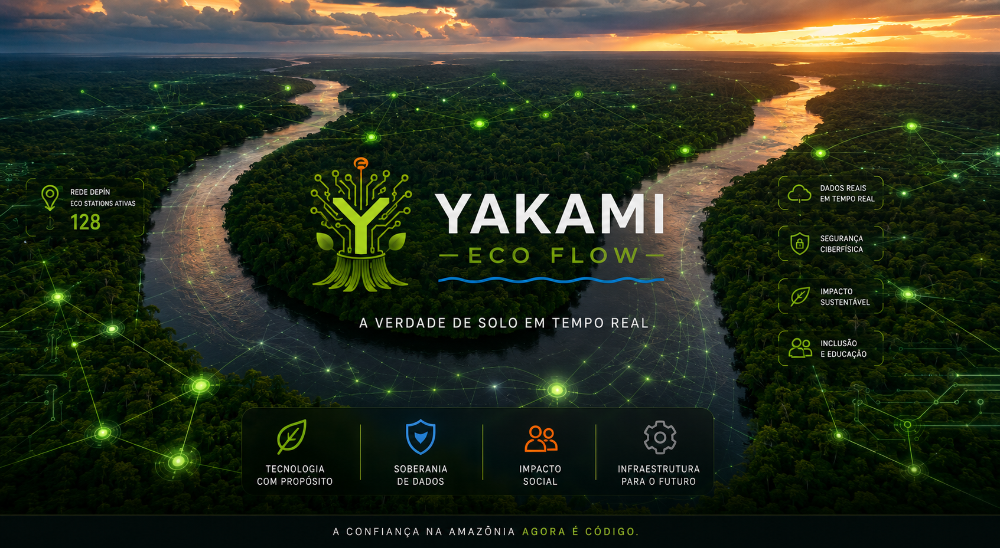
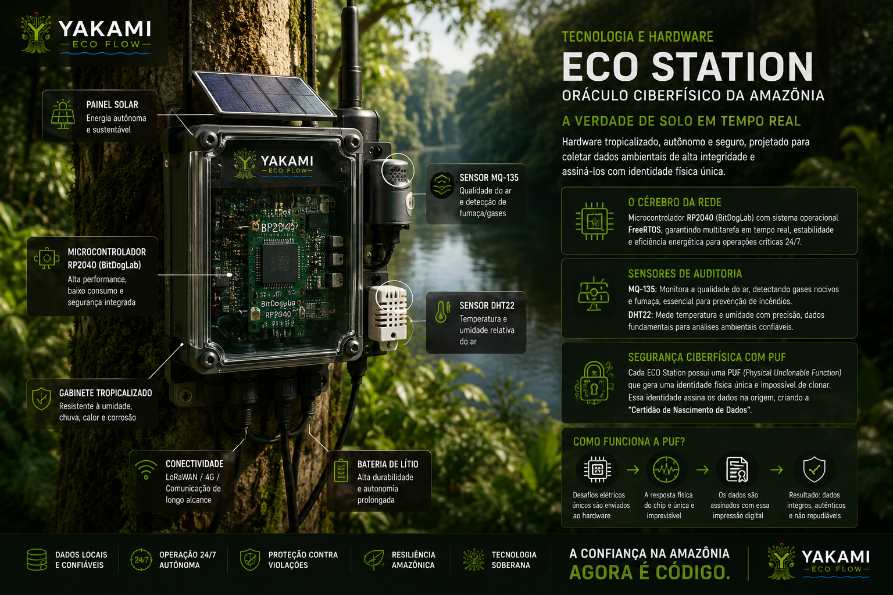
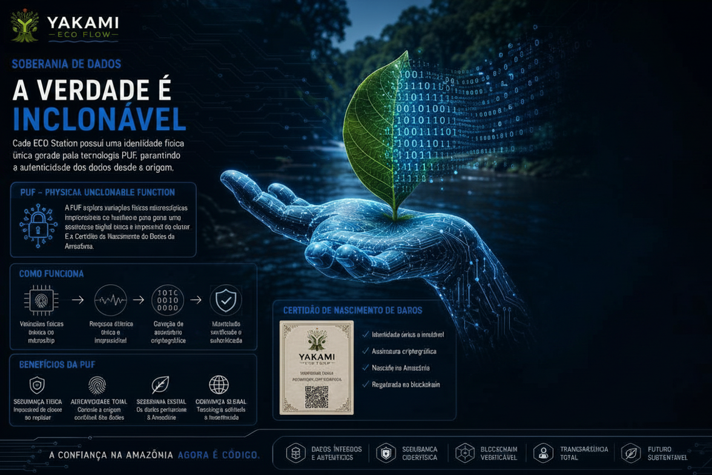
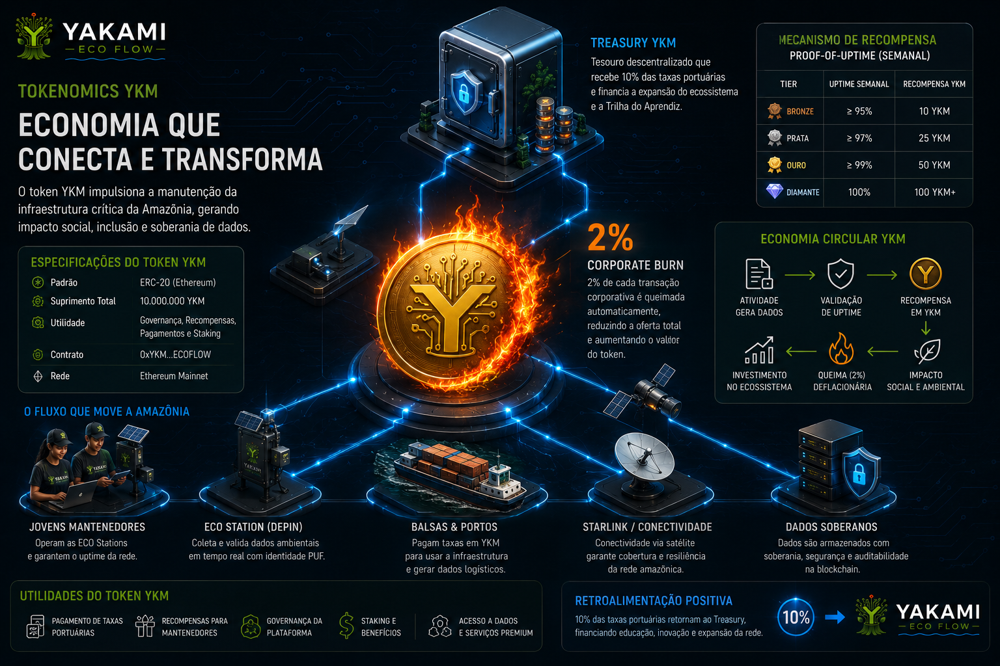
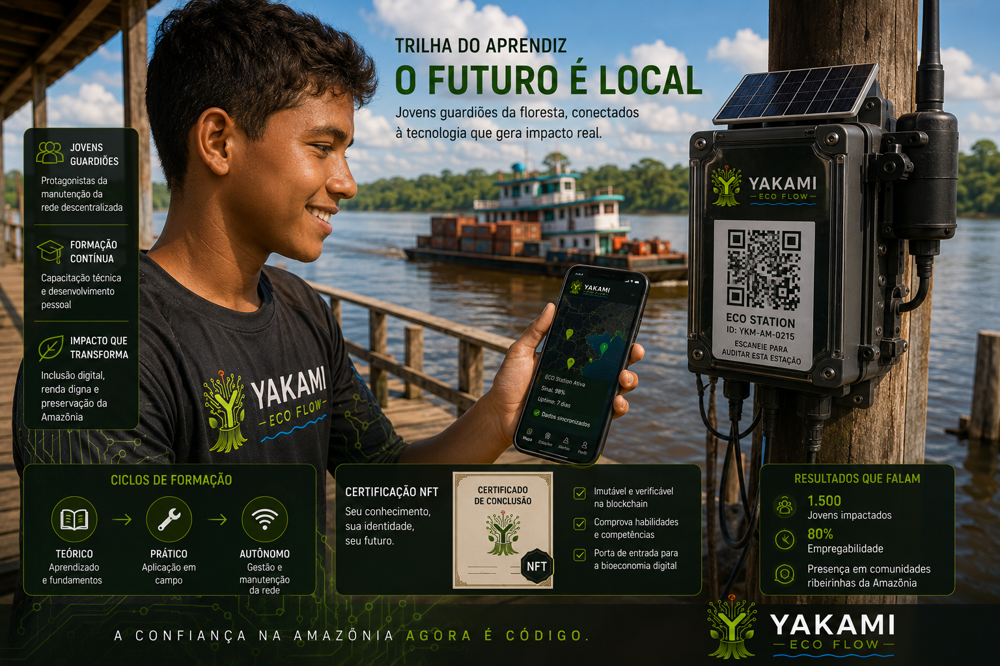
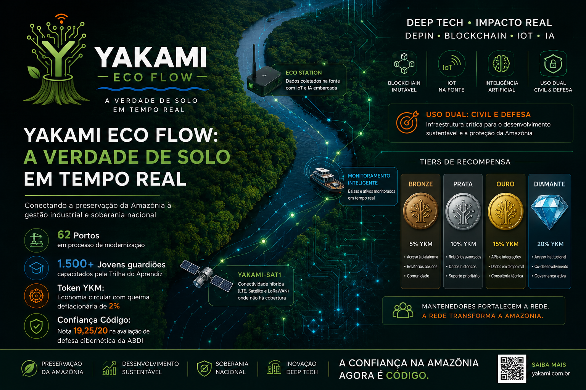

DESAFIO HACKWEB WEB3
YAKAMI TRUSTFLOW
Substituindo a confiança manual por Smart Contracts. A primeira infraestrutura ciberfísica e de governança imutável construída para os desafios da Amazônia.
Substituindo a confiança manual por Smart Contracts. A primeira infraestrutura ciberfísica e de governança imutável construída para os desafios da Amazônia.






